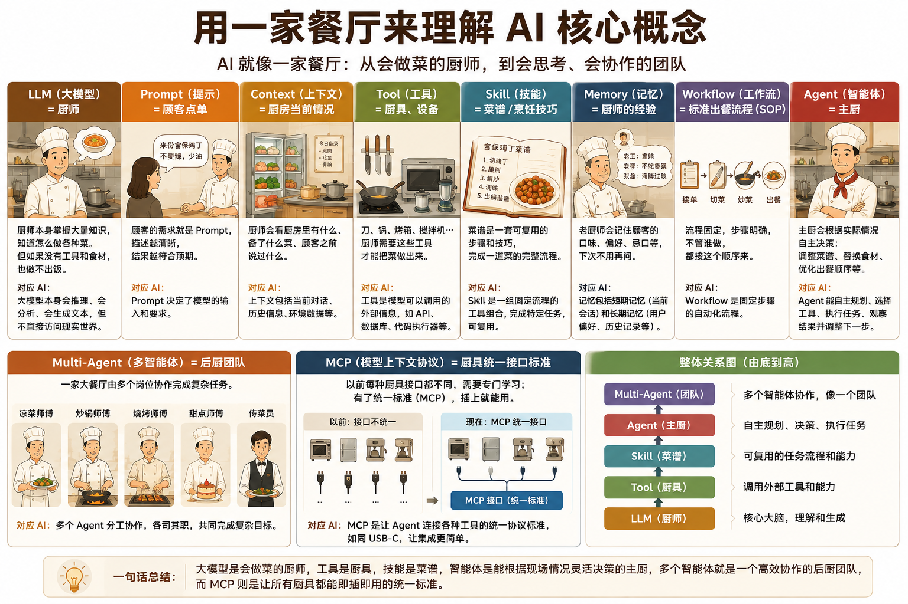

|
A需求翻译
业务方发来一段需求描述，你要翻译成技术语言给开发。听懂人话、说清技术——这中间全是手工活。 |
B会议纪要
开会记了一堆零散要点。整理成结构化的会议纪要、按格式输出、确认待办——每次半小时起步。 |
|
C画流程图
业务方说「帮我画个流程」，你打开工具拖拽画完。改一版、重画一版、对齐一版——时间都花在了操作上。 |
D数据整理
Excel 从不同系统导出，格式五花八门。手工筛选、合并、去重、核对——脑子不累，手累。 |
|
A模型
AI 的「大脑」。比如 DeepSeek、Claude、GPT。它负责理解和生成内容，但不负责动手操作文件。 |
BAgent
AI 的「手脚」。能在你的电脑上读文件、写文件、执行命令。把"想"变成"做"。 |
|
CSkill
Agent 的「操作说明书」。你写好规则：会议纪要按什么格式输出、SQL 按什么规范写。Agent 拿着说明书干活，不会跑偏。 |
D类比
把 LLM 想象成厨师，Agent 是主厨，Tool 是厨具，Skill 是菜谱。翻到下一页就懂了——一张图的事。 |

| LLM = 厨师 | 掌握海量知识（怎么做红烧肉、牛排几成熟），但空有知识做不出菜——需要厨具和食材。同样，大模型会推理但无法直接访问你的文件。 |
| Prompt = 点单 | 顾客说「宫保鸡丁，不要辣，少油」。描述越清晰，结果越满意。Prompt 就是你对 AI 说的那句话。 |
| Context = 厨房信息 | 冰箱里有什么、顾客花生过敏、今天的备菜——Context 让厨师做对菜。AI 的 Context 就是你当前文件夹里的文档和对话历史。 |
| Tool = 厨具 | 刀、锅、烤箱——没有烤箱烤不了面包，没有 API 查不了天气。Tool 是 AI 连接现实世界的接口。 |
| Skill = 菜谱 | 宫保鸡丁菜谱：切丁→腌制→爆炒→调味→出锅。AI 的 Skill 也是一套固定流程，比如「分析供应商风险」：搜索新闻→提取企业→风险评分→生成报告。 |
| Memory = 厨师经验 | 老厨师记得老王喜辣、老李不吃香菜。AI 的 Memory 记得你偏好 Python、做供应链——不用每次都问。 |
| Workflow = SOP | 麦当劳后厨：接单→切菜→炒菜→装盘→出餐。无论谁来做，步骤固定。AI Workflow 也一样。 |
| Agent = 主厨 | 这是最关键的区别。普通 Workflow 严格按菜谱执行；主厨发现没有鸡腿肉→换成鸡胸肉。Agent 的核心是自主决策，而不是执行固定流程。 |
| Multi-Agent = 后厨团队 | 凉菜、炒锅、烧烤、甜点、传菜——各司其职。AI 的 Multi-Agent 就像搜索 Agent、分析 Agent、代码 Agent 协同完成任务。 |
| MCP = 统一接口 | 以前 A 牌锅、B 牌炉灶、C 牌烤箱各用各的开关。现在都插 USB-C。MCP 就是 AI 界的 USB-C，让所有工具都能直接插上用。 |
|
M模型（Model）
AI 的「大脑引擎」。GPT-5.5、Claude 4、DeepSeek V3 都是模型。你没法直接跟模型聊天——它就是一个算法，没有界面。模型负责理解和生成，但需要有人把它包装成产品才能用。 |
P产品（Product）
用户实际面对的界面。ChatGPT 是产品，它底层用 GPT 模型；Kimi 是产品，它底层用自己的模型。产品决定你怎么跟 AI 交互（打字、语音、文件上传），模型决定 AI 聪不聪明。 |
|
B类比
模型是发动机，产品是整辆车。法拉利和五菱宏观的发动机不同，但都能让你从 A 到 B。同样，ChatGPT 和 Kimi 用的底层模型不同，但都能帮你写东西——体验和边界不同罢了。 |
·为什么重要
OpenCode 不挑发动机——DeepSeek、Claude、GPT 随便换。它像一个可以装不同引擎的车架，你选什么引擎，它都能跑。这也是它和 ChatGPT 这类固定产品的根本区别。 |
|
A任务
告诉它你要什么——越具体越好。 |
B背景
给它上下文，它才能做对。 |
|
C格式
指定输出格式，不说就全靠猜。 |
D约束
给它边界——长度、语言、风格。 |
完整示例
「把这份会议纪要整理成标准格式，包含待办事项和负责人，用表格输出，不要超过一页」
一个 AI Agent 系统。给它一个文件夹，它会自己读文档、改文件、然后告诉你做了什么。不挑模型——可以用 DeepSeek、Claude、GPT 任意一种「大脑」。免费、开源。
终端（TUI）：最经典的模式，打字交互，适合习惯命令行的同学。
网页界面（Web）：opencode web 一键启动浏览器访问，图形界面，不用碰终端就能用。
桌面应用（Desktop）：macOS / Windows / Linux 都有安装包，官网 opencode.ai 直接下载。
| DeepSeek 网页版 | 浏览器就能用，免费。但只能聊天，不能操作你的文件 | 适合日常问答 |
| ChatGPT | 浏览器 / App，免费或付费。部分场景可以动手，但操作范围受限 | 适合通用场景 |
| OpenCode | 电脑终端，免费开源。能读、能写、能执行。不挑模型 | 适合数字化团队 |
| Claude Code | 终端，需要 API 付费。最强编码能力，但面向开发者 | 适合专业开发 |
能做：终端里的轻量编码助手，免费开源，同样能在文件层面操作
不能做：团队协作、Skill 系统、多模型切换——这些只有 OpenCode 提供
你不需要理解它是怎么调 API 的，你只需要知道：
「帮我把这个需求描述转成 SQL，按品类汇总华南区过去三个月的退货率」
先读你给的文档 → 理解需求 → 生成 SQL → 把每一步逻辑写成注释 → 告诉你改了哪里、为什么这样写
做数字化看板的日常：
业务方发来「我想看华南区过去三个月退货率按品类排名」。把这个描述告诉 OpenCode，它去翻你的数据库表结构，生成 SQL，同时用注释解释每一步的逻辑。你只需要审核对不对——而不是从零开始拼 JOIN。
你只记了关键词、几个数字、三个待办事项。
告诉 OpenCode：「把这些笔记按以下格式整理成会议纪要——会议主题 / 参会人 / 核心结论 / 待办事项（责任人+截止日期）/ 下次会议时间」。它自动识别关键信息、结构化输出、格式统一。四十分钟的整理变成两分钟审核。
告别拖拽画图。
告诉 OpenCode：「画一个采购审批流程：申请人提交 → 部门经理审批 → 金额超 5,000 转财务总监 → 审批通过后生成采购单」。它生成 Mermaid 代码，你粘贴到飞书文档——直接渲染成流程图。改需求？改文字描述就行，不用重画。
|
AExcel 清洗
多个系统导出的 CSV 格式混乱 → 告诉它合并规则 → 自动清洗、去重、分类。你的角色从「操作员」变成「定义规则的人」。 试试：「把这三个 CSV 合并，按供应商代码去重，保留最新日期的记录」 |
B需求文档标准化
业务方给的需求五花八门 → OpenCode 按统一模板重排 → 开发团队拿到的永远是规范文档。沟通成本立降。 试试：「把这份业务需求按标准模板重排：背景 / 核心诉求 / 验收标准 / 优先级」 |
|
C写周报
把这周干的几件事列个清单 → 自动扩写成完整周报。不再从空白文档开始憋字。 试试：「这周做了供应商风险分析、上线退货率看板、跟进三个需求。帮我写成周报，每项三句话」 |
D还能干什么
翻译技术文档 · 做竞品调研摘要 · 解释 API 文档 · 生成测试用例 · 根据模板批量生成通知…… |
|
①AI 会一本正经地胡说八道
它自信地说 SQL 没问题——但字段名可能不存在，JOIN 方向可能反了，聚合逻辑可能漏了条件。SQL 跑一下再交。它说的都对？不一定。你审核过的才对。 |
②不要贴敏感数据
你用外部 API（DeepSeek / Claude / GPT）时，你贴进去的数据会发到云端服务器。人事薪资、供应商报价、客户名单——这些东西，在公司内网用公司部署的模型才是安全的。 |
|
③你的角色是审核，不是照单全收
AI 是你的实习生——手脚快但不一定靠谱。它可以替你「做」，但不能替你「判断」。最终决策永远是你。你的业务经验是 AI 永远追不上的东西。 |
🔒内网安全说明
目前公司内网使用的是公司自己部署的大模型，不经过外部 API——你的数据不出公司网络，不存在泄露风险。 |
① 装 Node.js：官网下载，一路下一步
② 终端输入：
npm i -g opencode-ai
⚠ 内网环境需先配置 npm 内部镜像，或联系 AI 团队获取离线安装包。外网设备正常安装即可。
③ 配置一个 API Key（DeepSeek / Claude / GPT 任一即可）
打开你的工作文件夹，打字告诉它你要什么。不需要学语法，不需要会编程。会打字就够。
第一次建议从一个已经会做的任务开始——比如让它帮你转一条 SQL——对比你自己的写法，建立信任感。
| 宝玉 xp | 把 AI 讲得最通俗的人。从提示词到新模型解读，不装逼、干货多。入门必追。 | 微博 / X |
| 归藏的 AI 工具箱 | 专注 AI 效率工具评测。每天都在测什么工具能真正提升生产力。适合「不想了解技术、只想用好工具」的人。 | 微博 / X |
| 腾讯研究院 | 机构视角的 AI 趋势分析。比个人博主更系统，比学术论文更易懂。适合了解宏观方向。 | 公众号 |
| 数字生命卡兹克 | AI 创意和视觉方向。风格轻松，选题有趣，适合换换脑子、看看 AI 还能玩出什么花样。 | 微博 / B 站 |
| AI 产品黄叔 | 从产品经理角度看 AI。不讲代码，讲场景、讲落地、讲「这个功能能帮业务解决什么问题」。 | 即刻 / X |
| 鱼总聊 AI | 深度行业解读。适合想多了解 AI 产业逻辑、不想停留在表面新闻的同事。 | X |
「一个会问问题的业务专家，胜过十个只会写代码的工程师。」
—— 全场最值得记住的一句